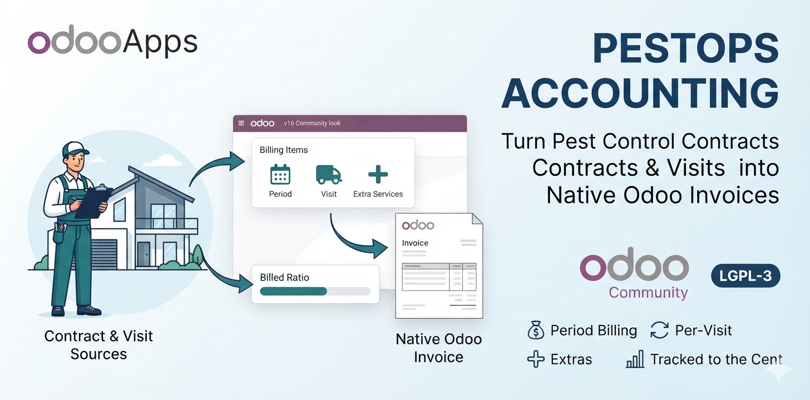
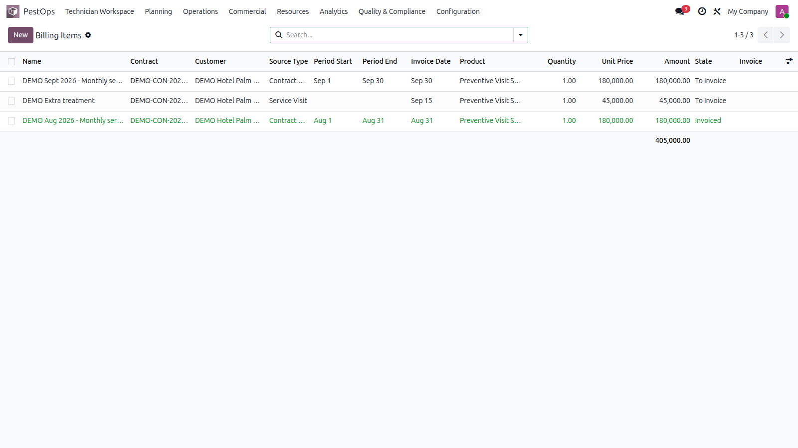
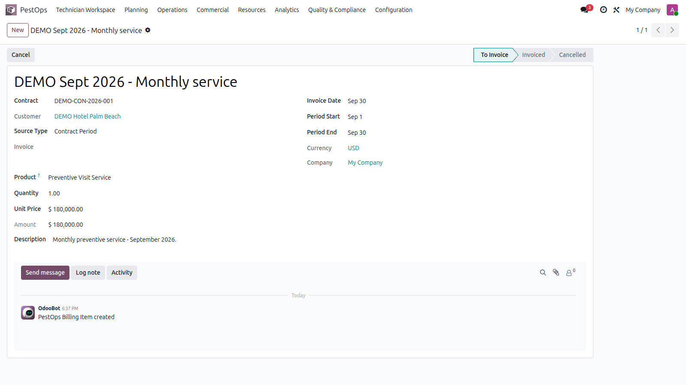
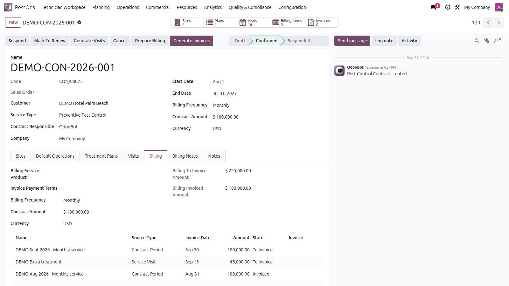

💰 Contract Billing & Invoicing · Odoo Community
🧾 Billing Items 🔁 Period & Visit Sources 🧮 Native Invoices 📊 Billed Ratios


Billing items with source, state and amounts.
Monthly retainers, billable call-outs and one-off extras all become structured billing items — then real Odoo invoices your accountant already knows.
📅 Monthly Retainers 🚨 Billable Call-Outs ➕ Extra Services 📉 Unbilled Tracking
Contract periods (e.g. "September 2026 — monthly service"), service visits linked to the intervention that generated them, and manual additional services — each with product, quantity, unit price and auto-computed amount in the contract currency, payment terms carried over.

Billing item detail with contract, visit and invoice link.
Select items and generate invoices: real account.move customer invoices, automatically grouped per customer, company, currency and payment terms — with correct invoice lines, dates and references. Items flip to invoiced and stay linked for audit.

Contract Billing page: totals, workflow buttons and all period and visit items with states.
| Odoo Version | Community |
|---|---|
| License | LGPL-3 |
| Module Type | Extension (requires PestOps Core) |
| Dependencies | pestops_core, account |
| External Services | None required |
📧 imazighenapps@gmail.com — fast response 🔄 Free Updates